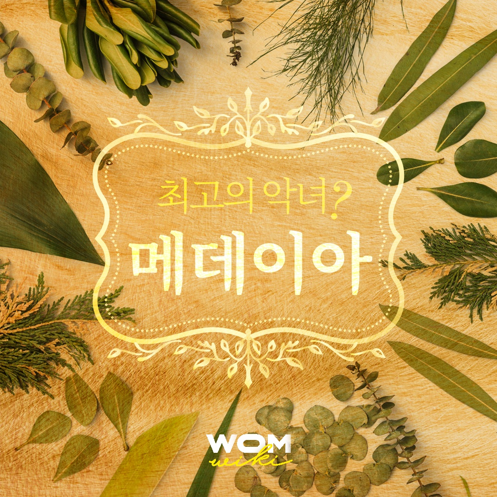

| 메데이아는 그리스 신화에서 ‘최고의 악녀’라는 수식어와 함께 등장한다. 남동생을 살해하고 아버지와 조국을 등진 배신자, 그리고 두 아들을 죽이고 이아손의 새 약혼녀를 살해한 잔인하고 분노에 찬 여성으로 그려진다. |  |
"그리스 신화에 나오는 마녀이다. 아르고호 원정대를 이끌고 도착한 이아손에게 반해서 아버지인 콜키스의 왕 아이에테스를 배신하고 이아손이 황금양털을 손에 넣을 수 있도록 도와준 뒤 그와 결혼하였다. 하지만 나중에 이아손이 자신을 배신하고 코린토스 왕 크레온의 딸 글라우케와 결혼하려 하자 글라우케와 크레온을 독살하고 이아손과 사이에서 낳은 자신의 두 아들마저 제 손으로 죽여 이아손에게 복수하였다."1
독일 작가 크리스타 볼프는 악녀 메데이아를 재해석했다.
볼프는 메데이아라는 이름은 “좋은 충고를 아는 자”라는 뜻으로, 어원적으로 지혜를 뜻하는 ‘메티스(Metis)’와 연관이 있으며 ‘의학(medicine)’이라는 단어 또한 메데이아의 이름에서 유래한다는 것을 밝혀낸다. 또한, 볼프는 메데이아가 여성이면서 이방인이라는 점에 주목하며 메데이아가 왜 고향 콜키스를 떠났는지 처음부터 질문한다. 메데이아가 이아손과 함께 떠난 것은 타락하고 몰락한 콜키스에 남아있을 수 없어서 택한 정치적 망명이었다. 하지만 이아손은 메데이아의 탁월한 지혜와 능력을 위협적으로 느꼈고 자신의 위신에 해가 된다고 생각했다. 메데이아는 이아손 뿐만 아니라 코린토스의 남성 지배집단으로부터 철저하게 배척당했다.
볼프는 메데이아가 정치적 희생양이었다고 주장한다. 페스트로 흉흉해진 코린토스의 민심을 수습하고자 ‘용서받을 수 없는 여성’이 필요했고 메데이아를 악마화했다. 메데이아는 연쇄 살인범이 아니었다. 메데이아가 버림받은 후 이아손과 결혼한 글라우케 공주는 죄책감으로 자살했고 메데이아의 아들들은 코린토스의 시민들이 던진 돌에 맞아 죽었지만, 메데이아는 연적과 자식을 살해한 범인으로 모든 혐의를 뒤집어쓰게 되었다.